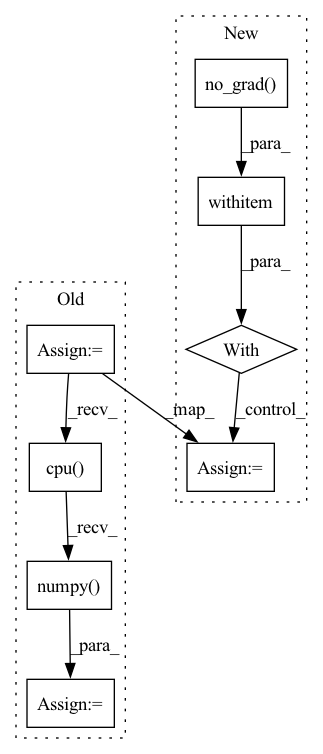

Pattern ID :17251
Before Change
next_state_q2_value = self.target_q2_network(torch.cat([next_obs_batch, next_state_action], dim=1))
next_state_min_q = torch.min(next_state_q1_value, next_state_q2_value)
target_q = (next_state_min_q - self.alpha * next_state_log_pi)
target_q = reward_batch + self.gamma * (1. - done_batch) * target_q
//compute q loss and backward
q1_loss = F.mse_loss(curr_state_q1_value, target_q.detach())
q2_loss = F.mse_loss(curr_state_q2_value, target_q.detach())
q1_loss_value = q1_loss.detach().cpu().numpy()
q2_loss_value = q2_loss.detach().cpu().numpy()
self.q1_optimizer.zero_grad()
self.q2_optimizer.zero_grad()After Change
reward_batch = reward_batch * self.reward_scale
curr_state_q1_value = self.q1_network(torch.cat([obs_batch, action_batch],dim=1))
curr_state_q2_value = self.q2_network(torch.cat([obs_batch, action_batch],dim=1))
with torch .no_grad():
next_state_action, next_state_log_pi = \
itemgetter("action_scaled", "log_prob")(self.policy_network.sample(next_obs_batch))
next_state_q1_value = self.target_q1_network(torch.cat([next_obs_batch, next_state_action], dim=1))
next_state_q2_value = self.target_q2_network(torch.cat([next_obs_batch, next_state_action], dim=1))
next_state_min_q = torch.min(next_state_q1_value, next_state_q2_value)
target_q = (next_state_min_q - self.alpha * next_state_log_pi)
target_q = reward_batch + self.gamma * (1. - done_batch) * target_q
//compute q loss and backward
q1_loss = F.mse_loss(curr_state_q1_value, target_q)In pattern: SUPERPATTERN
Frequency: 3
Non-data size: 8
Instances Fragment ID: 57409514
Project Name: x35f/unstable_baselines
Commit Name: fd650918d0f96ab53625afed362025e5a53c10a6
Time: 2022-06-13
Author: 1621322691@qq.com
File Name: unstable_baselines/baselines/sac/agent.py
M Class Name: SACAgent
N Class Name: SACAgent
M Method Name: update(2)
N Method Name: update(2)
M Parent Class: BaseAgent,torch.nn.Module
N Parent Class: BaseAgent,torch.nn.Module
M File Name: unstable_baselines/baselines/sac/agent.py
N File Name: unstable_baselines/baselines/sac/agent.py
M Start Line: 78
M End Line: 139
N Start Line: 78
N End Line: 131
Before Change
for batch_idx, (data, target) in enumerate(self.train_data_loader):
data, target = data.to(self.device), target.to(self.device)
output_tc = self.teacher(data)
// TODO: Find an elegant way to free the feature map and computation graph
output_tc = torch.tensor(output_tc.detach().cpu().numpy() ).cuda()
output_st = self.student(data)
supervised_loss = self.criterion(output_st, target)/self.accumulation_stepsAfter Change
for batch_idx, (data, target) in enumerate(self.train_data_loader):
data, target = data.to(self.device), target.to(self.device)
with torch .no_grad():
output_tc = self.teacher(data)
// TODO: Find an elegant way to free the feature map and computation graph
//output_tc = torch.tensor(output_tc.detach().cpu().numpy()).cuda()
Fragment ID: 57409517
Project Name: lehduong/knowledge-distillation-by-replacing-cheap-conv
Commit Name: 7b28b7ea3d6766ff87845d80d5bdc6ef5165cf58
Time: 2020-01-22
Author: oopsxilitol@gmail.com
File Name: trainer/trainer.py
M Class Name: TrainerTeacherAssistant
N Class Name: TrainerTeacherAssistant
M Method Name: _train_epoch(2)
N Method Name: _train_epoch(2)
M Parent Class: BaseTrainer,BaseKnowledgeDistillationTrainer
N Parent Class: BaseTrainer,BaseKnowledgeDistillationTrainer
M File Name: trainer/trainer.py
N File Name: trainer/trainer.py
M Start Line: 182
M End Line: 184
N Start Line: 182
N End Line: 187
Before Change
self.tile_process()
else:
self.process()
output_img = self.post_process()
output_img = output_img.data.squeeze().float().cpu().clamp_(0, 1).numpy()
output_img = np.transpose(output_img[[2, 1, 0], :, :], (1, 2, 0))
if img_mode == "L":
output_img = cv2.cvtColor(output_img, cv2.COLOR_BGR2GRAY)
After Change
img = cv2.cvtColor(img, cv2.COLOR_BGR2RGB)
// ------------------- process image (without the alpha channel) ------------------- //
with torch .no_grad():
self.pre_process(img)
if self.tile_size > 0:
self.tile_process()
else:
self.process()
output_img_t = self.post_process()
output_img = output_img_t.data.squeeze().float().cpu().clamp_(0, 1).numpy()
output_img = np.transpose(output_img[[2, 1, 0], :, :], (1, 2, 0))
if img_mode == "L": Fragment ID: 57409509
Project Name: sczhou/codeformer
Commit Name: 581abcb93b238be31d0cfea8978c3d204114bc1b
Time: 2022-09-04
Author: shangchenzhou@gmail.com
File Name: basicsr/utils/realesrgan_utils.py
M Class Name: RealESRGANer
N Class Name: RealESRGANer
M Method Name: enhance(4)
N Method Name: enhance(4)
M Parent Class:
N Parent Class:
M File Name: basicsr/utils/realesrgan_utils.py
N File Name: basicsr/utils/realesrgan_utils.py
M Start Line: 199
M End Line: 211
N Start Line: 199
N End Line: 211